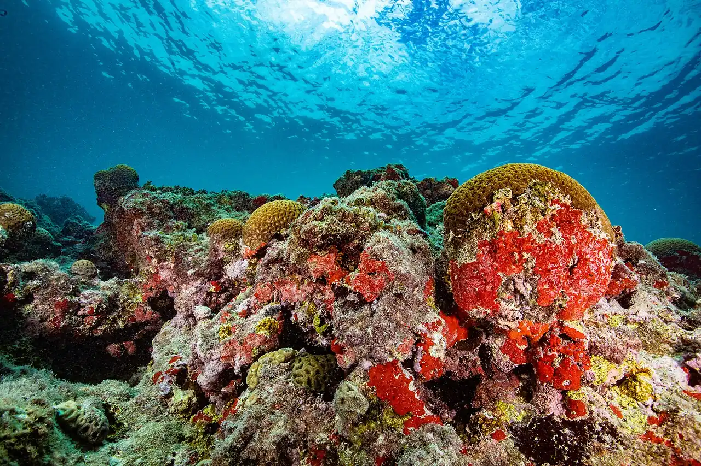

Archipel des Abrolhos
Bahia, Brésil · plongée, snorkeling

Premier parc national marin du Brésil, à environ 70 km au large de Caravelas. Récifs coralliens aux formations en champignon, les chapeirões, et baleines à bosse venues se reproduire pendant l’hiver austral.
- Lieu
- Bahia, Brésil
- Niveau
- Intermédiaire
- Activités
- plongée, snorkeling
- Type d'eau
- Mer / océan
- Coordonnées
- -17.96, -38.70 (position approximative du secteur)
Dangers à connaître
- Longue traversée en haute mer, souvent agitée : prévois contre le mal de mer.
- Parc national : pêche et prélèvements interdits, accès encadré.
Le conseil d'Ocean Buddy
Réserve ta sortie auprès d’un opérateur agréé de Caravelas : le débarquement n’est autorisé que sur l’île Siriba, avec les agents du parc.
Ouvrir dans Ocean Buddy Télécharger sur l'App Store
Source : Fiche Ocean Buddy · septembre 2026 · à vérifier localement.